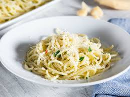

Home
Garlic and Oil Pasta Recipe

Description
Pasta Aglio e Olio is easy to make, delicious to eat and the sexiest pasta recipe I know. In about 20 minutes you’ll be serving glistening pasta loaded with olive oil, toasty garlic, fresh parsley, zesty lemon juice and a kick of crushed red pepper.
Ingredients
- Kosher salt
- 1 pound spaghetti
- 3 cloves garlic, minced
- 1/2 cup extra-virgin olive oil
- Pinch red pepper flakes
- 2 tablespoons chopped flat-leaf parsley
- 1/2 lemon, zested, optional
- Freshly grated Parmigiano-Reggiano, optional